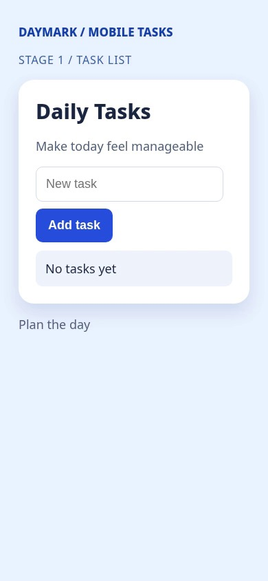
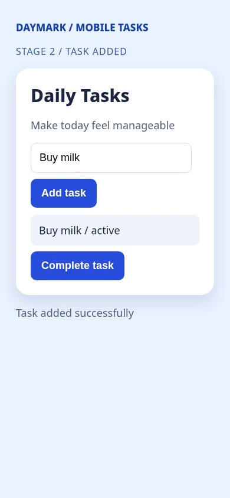
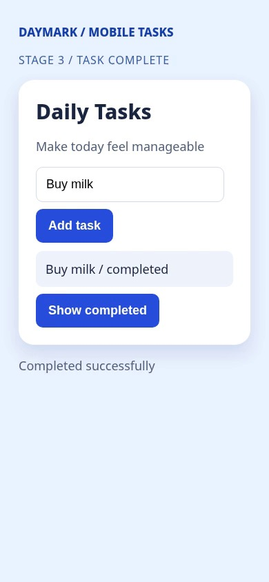
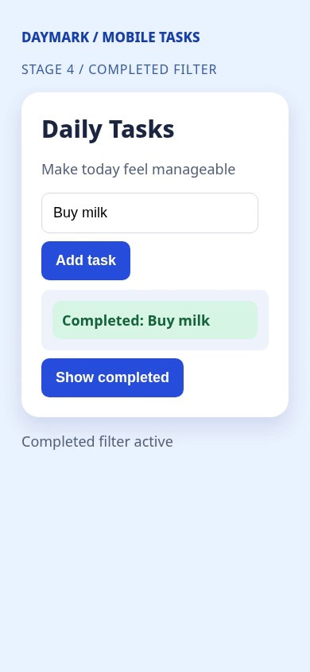
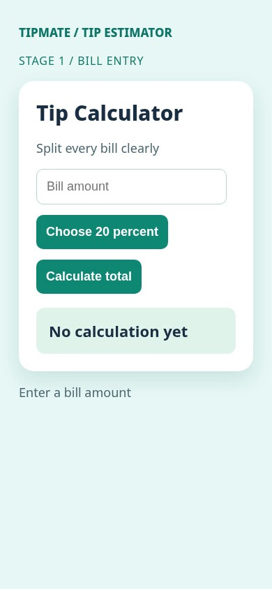
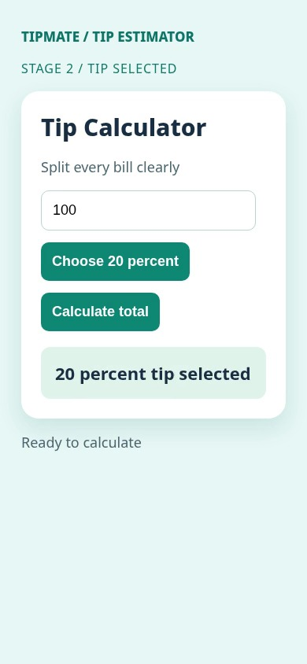
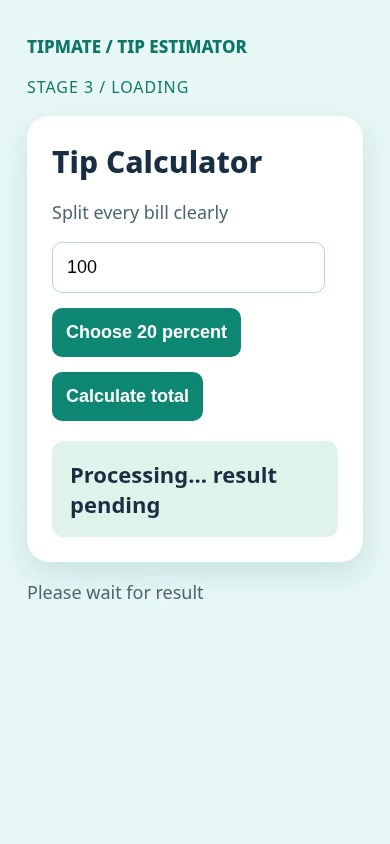
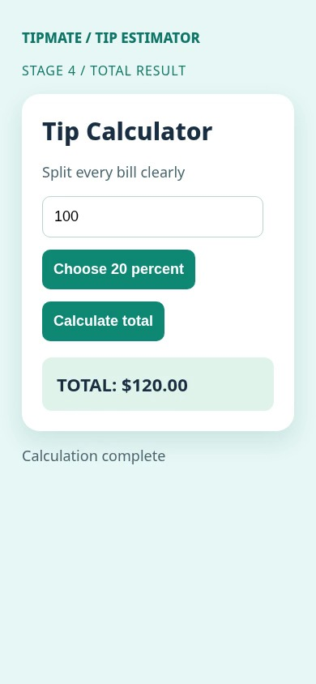

Understand what a screen recording actually shows.
A reproducible engineering prototype: extract timestamped frames, identify visible interface states, preserve image evidence, and flag uncertainty instead of guessing. Built and verified entirely with original synthetic recordings.
Task manager
Task entry, saved task, completion and completed-only filter




Extracted OCR timeline
| Time | Detected screen text | Frame IDs |
|---|---|---|
| 0.0s | Screen text changed to: DAYMARK / MOBILE TASKS STAGE 1 / TASK LIST Daily Tasks Make today feel manageable New task No tasks yet Plan the day | [0] |
| 2.0s | Screen text changed to: DAYMARK / MOBILE TASKS STAGE 2 / TASK ADDED. Daily Tasks Make today feel manageable Buy milk Buy milk / active Task added successfully | [4] |
| 4.0s | Screen text changed to: DAYMARK / MOBILE TASKS STAGE 3 / TASK COMPLETE Daily Tasks Make today feel manageable Buy milk Buy milk / completed Completed successfully | [8] |
| 6.0s | Screen text changed to: DAYMARK / MOBILE TASKS STAGE 4 / COMPLETED FILTER Daily Tasks Make today feel manageable Buy milk Completed: Buy milk Completed filter activ | [12] |
Controlled measurement: OCR text marker detection within ±1 second. This is not proof of model-based workflow comprehension.
Tip calculator
Bill entry, tip selection, pending state and confirmed total




Extracted OCR timeline
| Time | Detected screen text | Frame IDs |
|---|---|---|
| 0.0s | Screen text changed to: TIPMATE / TIP ESTIMATOR STAGE 1 / BILL ENTRY Tip Calculator Split every bill clearly Bill amount No calculation yet Enter a bill amount | [0] |
| 2.0s | Screen text changed to: TIPMATE / TIP ESTIMATOR STAGE 2 / TIP SELECTED Tip Calculator Split every bill clearly 100 20 percent tip selected Ready to calculate | [4] |
| 4.0s | Screen text changed to: TIPMATE / TIP ESTIMATOR STAGE 3 / LOADING Tip Calculator Split every bill clearly 100 Processing... result pending Please wait for result | [8] |
| 6.0s | Screen text changed to: TIPMATE / TIP ESTIMATOR STAGE 4 / TOTAL RESULT Tip Calculator Split every bill clearly 100 TOTAL: $120.00 Calculation complete | [12] |
Controlled measurement: OCR text marker detection within ±1 second. This is not proof of model-based workflow comprehension.
Traceable output, not manufactured AI performance.
Both videos were actually decoded; frame times and SHA-256 hashes were recorded. Local OCR extracted visible text, the output followed a strict schema, and a genuine ground-truth scorer checked timed interface-state markers. The calculator deliberately included a pending state, which was marked uncertain rather than declared complete.
The local OCR engine is not a vision-language model. The opt-in Gemini image-analysis adapter has a mocked integration test only; no live multimodal inference, real customer video, per-run API price or generalisation accuracy is claimed.
All source code, tests, synthetic videos, raw outputs and ground truth are included in the project package. Images above are extracted from the actual demo recordings, not stock screenshots.